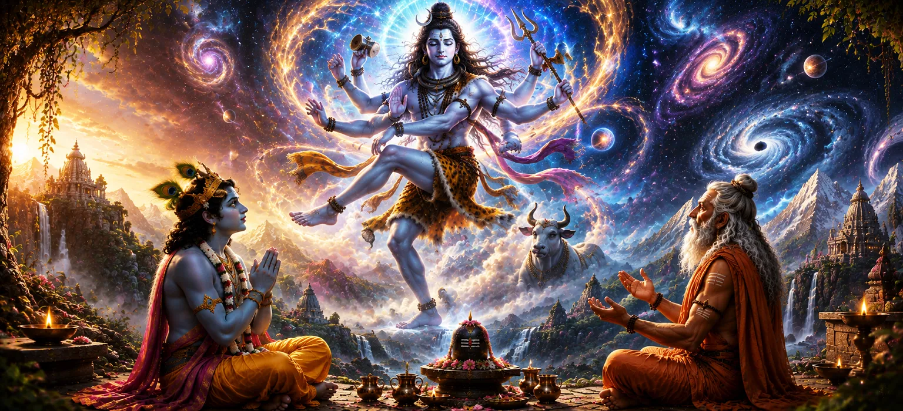

शिव की दिव्य शक्ति और आकर्षण
अध्याय 3 में शिव की सर्वोच्च महानता के रहस्योद्घाटन के बाद, उमा संहिता का चौथा अध्याय उनकी दिव्य शक्ति (ऐश्वर्य) और मनोरम जादू (मोहन ऊर्जा) की अद्भुत अभिव्यक्ति में गोता लगाता है। यह बताता है कि कैसे भगवान महादेव सभी भ्रमों के पूर्ण स्वामी रहते हुए अपनी अतुलनीय शक्ति के माध्यम से पूरे ब्रह्मांड को नियंत्रित करते हैं।
प्रवचन दर्शाता है कि शिव का जादू सांसारिक भ्रम का जाल नहीं है, बल्कि भटकती आत्माओं को परम वास्तविकता की ओर वापस खींचने के लिए बनाया गया एक आध्यात्मिक उत्प्रेरक है। उनके लौकिक नाटक (लीला) देवताओं, ऋषियों और मनुष्यों को समान रूप से मंत्रमुग्ध कर देते हैं, जिससे पता चलता है कि सबसे शक्तिशाली खगोलीय शक्तियां भी पूरी तरह से उनकी दिव्य लय में समाहित हैं।
शिव की दिव्य शक्ति की प्रकृति को समझकर, एक अभ्यासी बाहरी अस्तित्व के बदलते आवरणों से परे देखना सीखता है और हारा की शाश्वत, आकर्षक उपस्थिति में आध्यात्मिक आश्रय पाता है।
अध्याय 4 की मुख्य बातें
बेजोड़ क्षमता
शिव की छह गुना दिव्य संपदा और प्रकृति पर सर्वोच्च संप्रभुता की जांच करता है।
लौकिक जादू
यह दर्शाता है कि कैसे महादेव का दिव्य आकर्षण सारी सृष्टि को भक्ति की ओर आकर्षित करता है।
माया पर प्रभुत्व
यह प्रदर्शित करता है कि कैसे शिव माया से प्रभावित हुए बिना उसे धारण करते हैं।
आत्माओं का आकर्षण
बताते हैं कि कैसे शिव की कृपा सांसारिक लगाव को शुद्ध प्रेम में बदल देती है।
विस्मय और करुणा
शिव की दुर्जेय ब्रह्मांडीय सत्ता को उसकी मधुर पहुंच के साथ संतुलित करता है।
सत्य का प्रकाश
भक्तों को सांसारिक भ्रम के बंधनों को तोड़ने में मदद करने के लिए आध्यात्मिक स्पष्टता प्रदान करता है।
इस अध्याय में मुख्य विषय
- 01 शिव के परम ऐश्वर्य का स्वरूप →
- 02 दिव्य लीला का मनोरम आकर्षण →
- 03 शिव की माया और सृष्टि का जाल →
- 04 कैसे दिव्य प्राणी महादेव पर मोहित हो जाते हैं →
- 05 सांसारिक इच्छा को दिव्य भक्ति में परिवर्तित करना →
- 06 शांति (शांता) और शक्ति (रुद्र) का सामंजस्य →
- 07 समर्पण के माध्यम से भ्रामक आवरणों को भेदना →
- 08 शिव की दिव्य उपस्थिति का मुक्तिदायक प्रभाव →
- 09 महादेव के मनमोहक स्वरूप का ध्यान →
- 10 लौकिक धर्म का मार्ग प्रशस्त करना →
शिव के परम ऐश्वर्य का स्वरूप
अध्याय 4 शिव की ऐश्वर्य-अनंत शक्ति और पूर्ण संप्रभुता जो उनके अस्तित्व को परिभाषित करती है, पर गहन व्याख्या के साथ शुरू होता है। सांसारिक शासकों के विपरीत, जिनकी सत्ता व्युत्पन्न और अस्थायी है, महादेव की शक्ति आंतरिक, अनुत्पादित और शाश्वत है।
वह ब्रह्मांड में सभी शक्तियों का मूल है। मौलिक शक्तियाँ - वायु, अग्नि, जल और सूर्य - सटीक रूप से कार्य करती हैं क्योंकि वे शिव के सर्वोच्च आदेश द्वारा शासित होते हैं। उनकी शक्ति बिना किसी प्रयास के आकाशगंगाओं में व्यवस्था बनाए रखती है।
इस संप्रभु शक्ति को समझना भक्तों को आश्वस्त करता है कि दुनिया में कोई भी नकारात्मक शक्ति या कर्म बाधा शिव की सुरक्षा से अधिक मजबूत नहीं है।
दिव्य लीला का मनोरम आकर्षण
पाठ में बताया गया है कि भगवान शिव अपनी लौकिक लीला (लीला) के माध्यम से सृष्टि को मोहित करते हैं। उनकी अभिव्यक्तियाँ - चाहे नटराज के रूप में नृत्य करना हो, कैलासा पर्वत पर परम मौन में ध्यान करना हो, या वरदान देना हो - एक अनूठा दिव्य आकर्षण प्रदर्शित करती हैं।
इस दिव्य जादू को मोहना ऊर्जा के रूप में वर्णित किया गया है। यह शुद्ध प्राणियों के मन को मोहित करता है, उन्हें स्वार्थी इच्छाओं को त्यागने और शिव के चरणों के मधुर चिंतन में डूबने के लिए प्रेरित करता है।
जबकि निचला आकर्षण मनुष्य को सांसारिक भ्रम में बांधता है, महादेव का दिव्य आकर्षण सभी बंधनों को भंग कर देता है और आत्मा को स्वतंत्रता में छोड़ देता है।
शिव की माया और सृष्टि का जाल
अध्याय शिव की माया के दोहरे कार्य पर प्रकाश डालता है। अहंकार से बंधे लोगों के लिए, माया जन्म, मृत्यु, धन और पीड़ा का भ्रम बुनती है, और उन्हें संसार के अंतहीन चक्र में फंसाए रखती है।
हालाँकि, माया पूरी तरह से शिव के अधीन है। वह इसे व्यक्तिगत आत्माओं को प्रशिक्षित करने के लिए एक दिव्य मंच के रूप में उपयोग करता है, जिससे उन्हें वास्तविक मुक्ति की इच्छा होने तक सांसारिक परिणामों का अनुभव करने की अनुमति मिलती है।
जब कोई भक्त महादेव की शरण लेता है, तो शिव माया को अपना पर्दा उठाने का निर्देश देते हैं, जिससे सर्वोच्च सत्य की आंतरिक चमक प्रकट होती है।
कैसे दिव्य प्राणी महादेव पर मोहित हो जाते हैं
अध्याय 4 में बताया गया है कि कैसे ब्रह्मा, विष्णु, इंद्र और प्राचीन ऋषि जैसे महान देवता भी भगवान शिव के अप्राप्य तरीकों से बार-बार मंत्रमुग्ध हो जाते हैं। अपनी महान बुद्धि के बावजूद, वे उसके दिव्य इरादे को पूरी तरह से नहीं समझ सकते।
जब भी दिव्य प्राणी केवल बौद्धिक गौरव के माध्यम से शिव को समझने का प्रयास करते हैं, तो वे स्वयं को उनकी लीला से भ्रमित पाते हैं। जब वे विनम्रता से झुकते हैं तभी शिव उनके सामने अपना सच्चा, गौरवशाली स्वरूप प्रकट करते हैं।
इससे पता चलता है कि सृष्टि की कोई भी शक्ति या बुद्धि शिव पर कब्ज़ा नहीं कर सकती; वह विशेष रूप से सरल, सच्चे प्रेम के माध्यम से जीता जाता है।
सांसारिक इच्छा को दिव्य भक्ति में परिवर्तित करना
इस अध्याय में एक अद्वितीय आध्यात्मिक अंतर्दृष्टि यह है कि कैसे शिव का जादू मानवीय इच्छाओं को पुनर्निर्देशित करता है। मानवीय इंद्रियाँ स्वाभाविक रूप से संवेदी वस्तुओं की ओर खींची जाती हैं, जिससे बार-बार निराशा और चिंता होती है।
जब मन शिव की मनमोहक सुंदरता और शांतिपूर्ण ऊर्जा की झलक पाता है, तो सांसारिक आकर्षण तुरंत अपना आकर्षण खो देते हैं। सांसारिक लगाव स्वाभाविक रूप से ख़त्म हो जाता है, और उसकी जगह ईश्वर के प्रति अटूट भक्ति आ जाती है।
इस प्रकार, शिव मानवीय भावनाओं का दमन नहीं करते; वह अपने दिव्य व्यक्तित्व के उत्कृष्ट चुंबक के माध्यम से उनका उत्थान और शुद्धीकरण करता है।
शांति (शांता) और शक्ति (रुद्र) का सामंजस्य
यह पाठ शिव के स्वभाव के भीतर राजसी विरोधाभास को चित्रित करता है। वह एक साथ शांता हैं - परम शांति का शांत, गहरा परोपकारी लंगर - और रुद्र - अंधेरे और बुराई का उग्र, दुर्जेय विध्वंसक।
यह दोहरी प्रकृति उनके दिव्य आकर्षण का हिस्सा है। विनम्र भक्त के लिए, उनकी उपस्थिति चाँदनी की तरह आरामदायक होती है; अभिमानियों और अधर्मियों के लिए उसका क्रोध लौकिक अग्नि के समान भयंकर है।
दोनों पहलुओं को पहचानने से भक्त के हृदय में गहरी श्रद्धा, विस्मय और कोमल स्नेह का स्वस्थ संतुलन स्थापित होता है।
समर्पण के माध्यम से भ्रामक आवरणों को भेदना
अध्याय 4 इस बात पर जोर देता है कि कोई भी अहंकारी प्रयास भगवान शिव की रहस्यमय शक्ति को भेद नहीं सकता। उसके भ्रम को पार करने की एकमात्र कुंजी बिना शर्त समर्पण (शरणगति) है।
जब कोई आत्मा अपना अभिमान त्याग देती है और ईमानदारी से महादेव को पुकारती है, तो भगवान व्यक्तिगत रूप से उस आत्मा को आध्यात्मिक भ्रम के जाल से बाहर निकालते हैं।
समर्पण शिव की रहस्यमयी शक्ति को वास्तविकता को छिपाने वाले घूंघट से एक प्रकाशस्तंभ में बदल देता है जो दिव्य रोशनी को प्रकट करता है।
शिव की दिव्य उपस्थिति का मुक्तिदायक प्रभाव
शास्त्र वर्णन करता है कि कैसे शिव के मनमोहक रूप की एक संक्षिप्त मानसिक दृष्टि या स्मरण भी गहन शुद्धिकरण ऊर्जा प्रदान करता है। यह जन्मों-जन्मों से एकत्र हुए भारी कर्म संस्कारों को तुरंत जला देता है।
उनका मनमोहक स्वरूप - राख से सुशोभित, त्रिशूल धारण किए हुए और अर्धचंद्र से सुशोभित - बेचैन मन को शांत करता है, गहन शांति और आंतरिक आध्यात्मिक जागृति प्रदान करता है।
जो लोग अपने मन को इस दिव्य उपस्थिति पर टिका देते हैं वे धीरे-धीरे भय, मोह और पुनर्जन्म के चक्र से मुक्त हो जाते हैं।
महादेव के मनमोहक स्वरूप का ध्यान
यह अध्याय शिव के मनमोहक रूप का ध्यान करने पर व्यावहारिक दिशा प्रदान करता है। साधकों को सलाह दी जाती है कि वे ब्रह्मांडीय शांति से घिरे हुए, ध्यान मुद्रा में शांतिपूर्वक बैठे हुए महादेव की कल्पना करें।
उनकी सौम्य मुस्कान, उनकी कमल आंखों और उनकी तीसरी आंख से निकलने वाली दिव्य रोशनी पर व्यवस्थित रूप से ध्यान केंद्रित करने से, अभ्यासकर्ता के मानसिक उतार-चढ़ाव स्वाभाविक रूप से शांत हो जाते हैं।
यह संरचित ध्यान बाहरी जागरूकता और आंतरिक अवशोषण को जोड़ता है, जिससे गहन ध्यान परमानंद (समाधि) प्राप्त होता है।
लौकिक धर्म का मार्ग प्रशस्त करना
अध्याय 4 शिव की सर्वोच्च शक्ति को ब्रह्मांड के नैतिक शासन से जोड़कर समाप्त होता है। चूँकि शिव के पास पूर्ण ऊर्जा और ज्ञान है, इसलिए वे मानवीय कार्यों को निर्देशित करने के लिए सख्त ब्रह्मांडीय कानून स्थापित करते हैं।
जो लोग उसके ब्रह्मांडीय व्यवस्था के साथ जुड़ते हैं वे अनुग्रह और आध्यात्मिक उन्नति का अनुभव करते हैं, जबकि जो लोग मुफ्त का दुरुपयोग करते हैं उन्हें संतुलन बहाल करने के लिए कर्म प्रतिशोध का सामना करना पड़ेगा।
यह तार्किक परिवर्तन अगले अध्याय के लिए मंच तैयार करता है, जो कर्म परिणामों और धार्मिक आचरण की सटीक यांत्रिकी की व्याख्या करता है।
अध्याय 4 की प्रमुख शिक्षाएँ
आंतरिक दिव्यता
शिव की शक्ति सर्वोच्च, अकारण और बाहरी परिस्थितियों से स्वतंत्र है।
मुक्तिदायक आकर्षण
शिव का दिव्य आकर्षण मन को अस्थायी सांसारिक सुखों से दूर ले जाता है।
उद्देश्यपूर्ण भ्रम
माया आत्माओं को परिपक्वता की ओर मार्गदर्शन करने के लिए आध्यात्मिक प्रशिक्षण भूमि के रूप में कार्य करती है।
विनम्रता की शक्ति
बौद्धिक अभिमान शिव को समझने में विफल रहता है; सरल भक्ति उसका हृदय जीत लेती है।
पूर्ण संतुलन
शिव विस्मयकारी शक्ति के साथ परम शांति का सहज सामंजस्य स्थापित करते हैं।
मन की शुद्धि
शिव के स्वरूप का चिंतन करने से कर्मों का मलबा साफ होता है और आंतरिक शांति मिलती है।
आध्यात्मिक चिंतन
अध्याय 4 हमें सिखाता है कि भगवान शिव की दिव्य शक्ति हावी होने या भयभीत करने के लिए नहीं है, बल्कि प्रत्येक आत्मा को प्यार से उसके असली घर में वापस लाने के लिए है। जब हम जीवन के भ्रमों और जटिलताओं से अभिभूत महसूस करते हैं, तो महादेव की मंत्रमुग्ध उपस्थिति को याद करने से हमें आश्वस्त होता है कि सभी घटनाएं एक प्रेमपूर्ण ब्रह्मांडीय व्यवस्था द्वारा नियंत्रित होती हैं। अपने अहंकार को उसके सक्षम हाथों में सौंपने से हमें आंतरिक शक्ति, शांति और आध्यात्मिक आनंद के साथ दुनिया में चलने की अनुमति मिलती है।
अध्याय 4 का संदेश जीना
हम चैप्टर 4 के पाठों को ध्यान और भक्ति के अभ्यास से लागू कर सकते हैं। जब मोहक सांसारिक विकर्षणों का सामना करना पड़े, तो रुकें और भगवान शिव की शाश्वत, शांतिपूर्ण सुंदरता को याद करें, जिससे आपके दिमाग को स्पष्टता हासिल करने में मदद मिलेगी।
आध्यात्मिक समस्याओं को हल करने के लिए केवल बौद्धिक चतुराई पर निर्भर रहने से बचें; सच्ची विनम्रता और दिव्य ज्ञान में विश्वास पैदा करें। प्रकृति के हर पहलू में काम करने वाली शिव की शक्ति को पहचानकर, हम साहस और धैर्य के साथ चुनौतियों का सामना करना सीखते हैं।
शिव की मनमोहक उपस्थिति को अपने विचारों में बसाने से हमारी दैनिक इच्छाएँ शुद्ध होती हैं और हमारा व्यक्तिगत जीवन दैवीय सद्भाव के साथ संरेखित होता है।
प्रमुख आध्यात्मिक अवधारणाएँ
ईश्वर की सर्वोच्च दिव्य संपदा, संप्रभुता और अनंत शक्ति।
शिव की मनमोहक दिव्य ऊर्जा जो सभी दिलों को आकर्षित करती है।
सहज ब्रह्मांडीय खेल जिसके माध्यम से शिव दुनिया में कार्य करते हैं।
महादेव के प्रति पूर्ण और बिना शर्त आध्यात्मिक समर्पण।
भगवान शिव का शांत, शांतिपूर्ण और दयालु पहलू।
दुर्जेय, ऊर्जावान पहलू जो नकारात्मकता और अहंकार को नष्ट कर देता है।
अध्याय सारांश
उमा संहिता अध्याय 4 में भगवान शिव की सर्वोच्च दिव्य शक्ति (ऐश्वर्य) और आकर्षक आकर्षण (मोहन शक्ति) का विवरण दिया गया है। यह दर्शाता है कि कैसे महादेव माया से बेदाग रहते हुए अपनी अंतर्निहित ऊर्जा के माध्यम से पूरे ब्रह्मांड को सहजता से नियंत्रित करते हैं। पाठ यह बताता है कि कैसे शिव की मंत्रमुग्ध कर देने वाली लीला साधकों को क्षुद्र सांसारिक लालसाओं से गहन आध्यात्मिक भक्ति की ओर ले जाती है। यह इस बात पर प्रकाश डालता है कि दिव्य प्राणी और प्राचीन ऋषि भी उनके गूढ़ ज्ञान से आश्चर्यचकित हैं, जो केवल विनम्र समर्पण के माध्यम से ही सुलभ है। अपने शांत (शांता) और दुर्जेय (रुद्र) पहलुओं को संतुलित करके, शिव ब्रह्मांडीय व्यवस्था बनाए रखते हैं और आत्माओं को माया के पर्दे को तोड़ने के लिए आमंत्रित करते हैं। अध्याय उन नैतिक नियमों की ओर इशारा करते हुए समाप्त होता है जो ब्रह्मांडीय संतुलन को संरक्षित करते हैं, जिससे अध्याय 5 में कर्म पर चर्चा का मार्ग प्रशस्त होता है।
अक्सर पूछे जाने वाले प्रश्न
① उमा संहिता अध्याय 4 का केंद्रीय विषय क्या है?
केंद्रीय विषय भगवान शिव की अप्रतिरोध्य दिव्य शक्ति (ऐश्वर्य), उनकी मंत्रमुग्ध करने वाली ब्रह्मांडीय शक्ति (माया) की खोज करता है, और कैसे उनकी दिव्य सुंदरता सभी प्राणियों को आकर्षित और मुक्त करती है।
② शिव का आकर्षण सांसारिक मोह से किस प्रकार भिन्न है?
सांसारिक लगाव आत्माओं को संसार के चक्र में बांधता है, जबकि शिव का दिव्य जादू चेतना को ऊपर उठाता है, इच्छाओं को शुद्ध करता है और आध्यात्मिक मुक्ति प्रदान करता है।
③ भगवान शिव की दिव्य शक्ति में माया की क्या भूमिका है?
माया शिव की लौकिक लीला (लीला) का साधन है; जबकि यह अहंकार से प्रेरित लोगों को भ्रमित करता है, यह महादेव के प्रति समर्पण करने वाले समर्पित साधकों के लिए ज्ञान के प्रवेश द्वार के रूप में कार्य करता है।
④ शिव को शांत और भयानक दोनों के रूप में क्यों वर्णित किया गया है?
उनकी दोहरी प्रकृति संपूर्ण ब्रह्मांडीय वास्तविकता को दर्शाती है - वह अपने भक्तों के लिए बेहद शांतिपूर्ण (शांता) हैं, फिर भी अज्ञानता और अधर्म के प्रति दुर्जेय (रुद्र) हैं।
⑤ एक साधक शिव की शक्ति के भ्रामक पहलू पर कैसे काबू पा सकता है?
अविचल भक्ति (भक्ति), शिव के पवित्र रूप पर ध्यान और आंतरिक शुद्धता की खेती के माध्यम से, एक साधक भ्रामक शक्ति को मुक्ति देने वाली कृपा में बदल देता है।
⑥ अध्याय 4 अध्याय 5 की ओर कैसे ले जाता है?
अध्याय 4 ब्रह्मांडीय नियमों को नियंत्रित करने वाली राजसी ऊर्जा को स्थापित करता है; अध्याय 5 जाँच करता है कि क्या होता है जब प्राणी गंभीर पापों और कर्म परिणामों के माध्यम से इन कानूनों का उल्लंघन करते हैं।
"उनकी सुंदरता ब्रह्मांड में प्रवेश करती है, उनकी शक्ति सभी गतिविधियों को बनाए रखती है, और उनकी कृपा हर भ्रम को तोड़ देती है।"
उमा संहिता के माध्यम से जारी रखें
अध्याय 4 में भगवान शिव की दिव्य शक्ति और मनमोहक आकर्षण का पता चलता है। उनकी अप्रतिरोध्य ब्रह्मांडीय ऊर्जा को समझने के बाद, यात्रा ब्रह्मांडीय न्याय प्रणाली, नैतिक कर्तव्य और कार्यों के परिणामों का पता लगाने के लिए अध्याय 5 में आगे बढ़ती है।